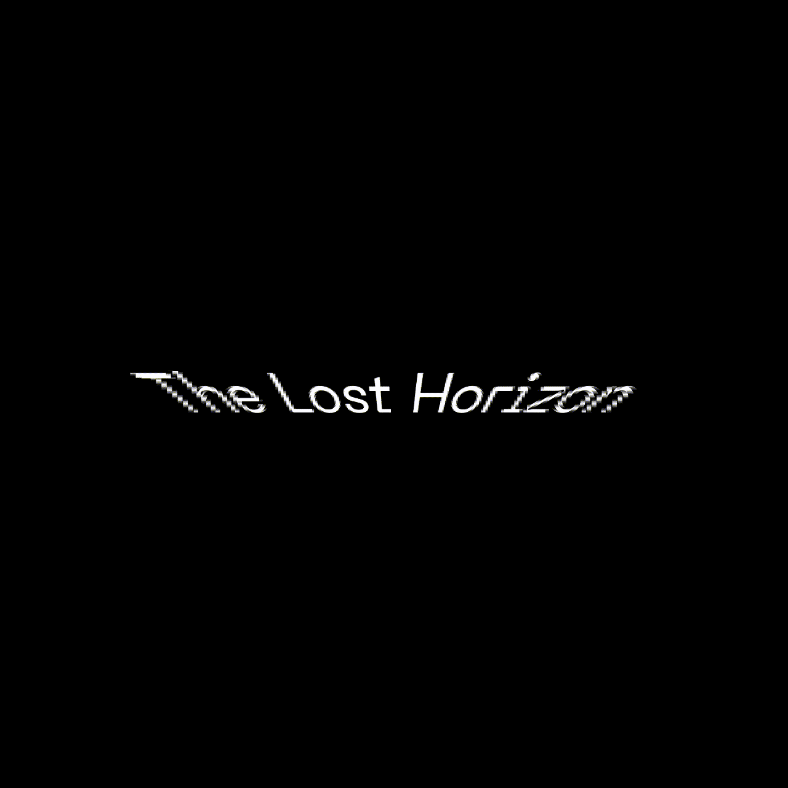

"The Earth is round. If you walk forward from any point on its surface, you will eventually return to the starting point...
It's quite similar. As we delved deeper into the microcosm, we reached the end of the microcosm, and thus returned to the entire macrocosm.